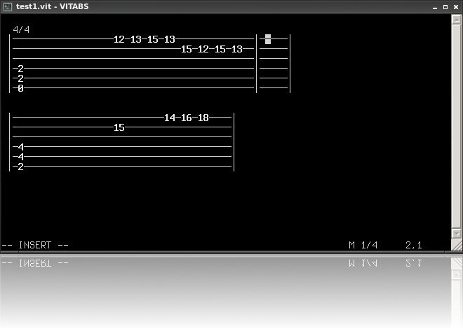

VITABS
the free guitar tab editor

Get the source
Manual
VITABS is a guitar tab editor inspired by the legendary Vi text editor. It is created with convenient editing and fast keyboard entry in mind. Keyboard mappings are modeled after Vi and Vim.